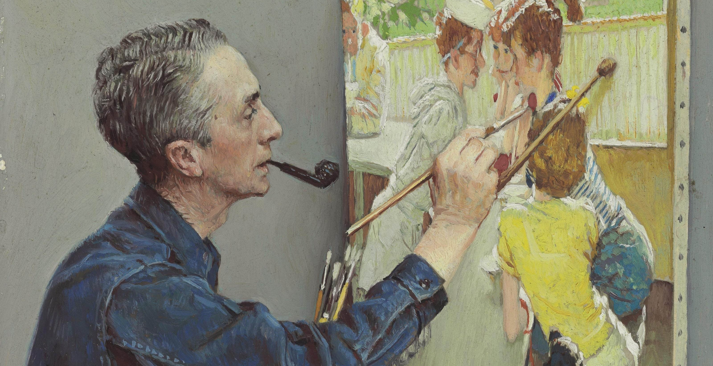
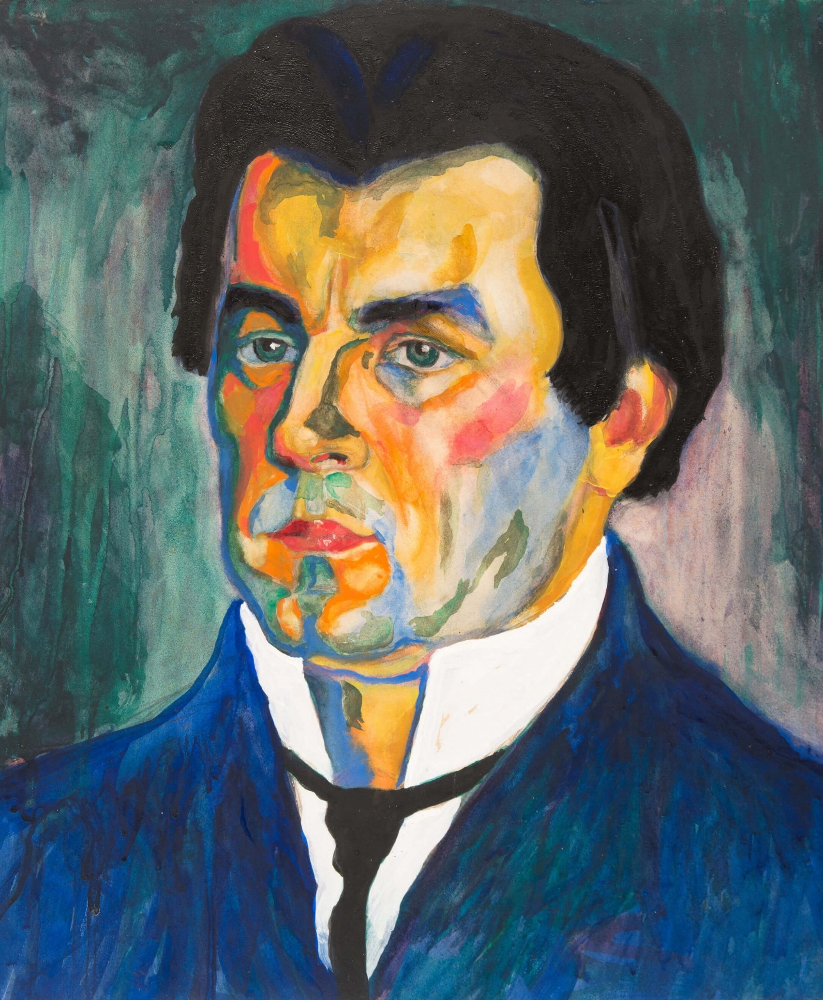
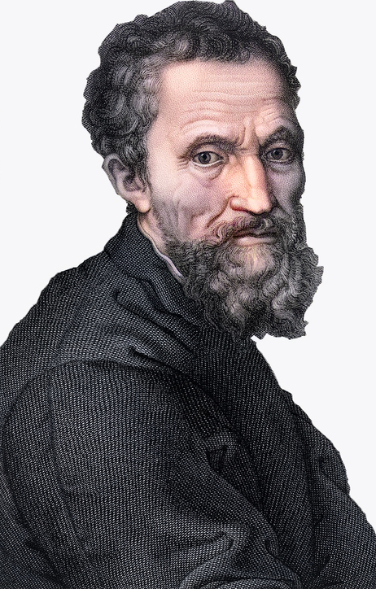

Художники

{% include 'middlenav.html' %}
Леонардо да Винчи
Живописец, скульптор, архитектор и учёный, изобретатель, писатель, музыкант,
один из крупнейших представителей искусства Высокого Возрождения,
яркий пример «универсального человека».
Самые знаменитые работы: Мона Лиза, Мадонна Литта, Спаситель мира.


Клод Моне
Импрессионист 19-го века. Был новаторским прорывом в развитии выразительного искусства.
Самые знаменитые работы: Дама с Зонтиком, Дикие Маки, Кувшинки.
Илья Ефимович Репин
Репин стал одной из ключевых фигур русского реализма. Художнику удалось решить задачу отражения в живописном произведении всего разнообразия окружающей жизни.
В своём творчестве он сумел охватить все стороны современности, затронуть темы, волнующие общественность, живо реагировал на злобу дня.
Самые знаменитые работы: Бурлаки на Волге, Запорожцы, Иван Грозный и сын его Иван, портрет Льва Толстого.


Густав Климт
Художник и декоратор, один из самых ярких представителей венского модерна. Один из основателей Венского сецессиона.
Его монументально-декоративные и живописные произведения отличает стилизация, символизм и эротизм.
Самые знаменитые работы: Три возраста женщины, Водяные змеи, Портрет Адели Блох-Бауэр, Поцелуй.
Казимир Малевич
Художник-авангардист польского происхождения, педагог, теоретик искусства, философ. Основоположник супрематизма — одного из крупнейших направлений абстракционизма.
Самые знаменитые работы: Супрематическая композиция, Красный квадрат (Женщина в двух измерениях), Черный квадрат.


Микеланджело Буонарроти
Один из крупнейших мастеров эпохи Возрождения и раннего барокко. Его произведения считались наивысшими достижениями искусства Возрождения ещё при жизни самого мастера.
По характеру своего дарования он был прежде всего скульптор.
Самые знаменитые работы: Сотворение Адама, Страшный Суд.
Пабло Пикассо
Основоположник кубизма. Пикассо много работал как график, скульптор, керамист и т. д. Вызвал к жизни массу подражателей и оказал исключительное влияние на развитие изобразительного искусства в XX веке.
Согласно оценке Музея современного искусства, Пикассо за свою жизнь создал около 20 тысяч работ.
Самые знаменитые работы: Девочка на шаре, Дора Маар с кошкой.


Рафаэль Санти
Один из представителей искусства эпохи Высокого Возрождения, или «римского классицизма» начала XVI века.
В своих произведениях Рафаэль воплотил представление о возвышенных идеалах ренессансного гуманизма, сумев соединить вечные, восходящие к античности, представления о красоте и новое христианское мироощущение.
Самые знаменитые работы: Сикстинская Мадонна, Донна Велата, Преображение, Триумф Галатеи.
Сальвадор Дали
живописец, график, скульптор, режиссёр и писатель. Один из самых известных представителей сюрреализма.
Самые знаменитые работы: Постоянство памяти, Метаморфозы Нарцисса, Лебеди, отражающиеся в слонах.


Иван Иванович Шишкин
Среди русских пейзажистов Шишкину принадлежит место одного из сильнейших художников.
Во всех своих произведениях он является знатоком растительных форм, воспроизводящим их с тонким пониманием, как общего характера, так и мельчайших отличительных черт любых деревьев, кустов и трав.
Самые знаменитые работы: Утро в сосновом лесу, Рожь, Сосны, освещённые солнцем.
Винсент Ван Гог
Художник-постимпрессионист, чьи работы оказали вневременное влияние на живопись XX века. самый знаковый художник постимпрессионизма.
За десять с небольшим лет создал более 2100 произведений, включая около 870 картин маслом.
Самые знаменитые работы: Звёздная ночь, Подсолнухи, Автопортрет с отрезанным ухом и трубкой.

{% endblock %}